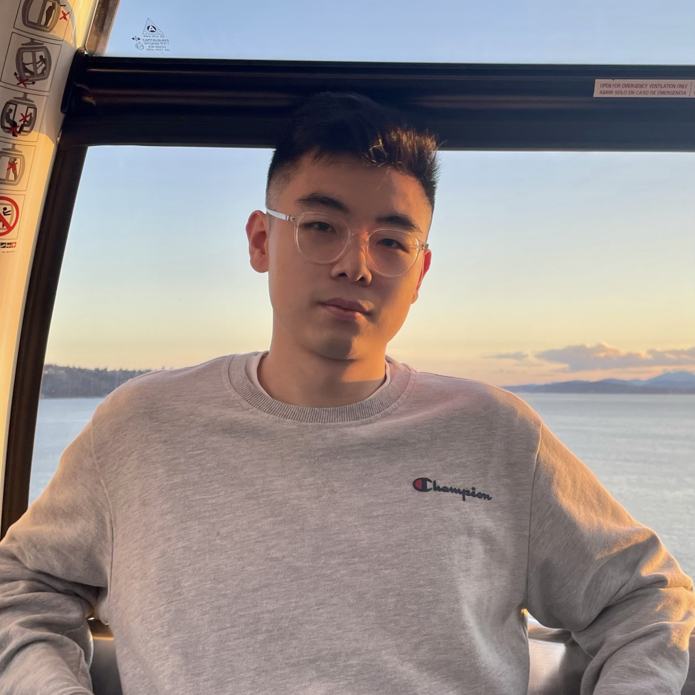

|
Hao Wang
haohw <at> tamu.edu
I am a first-year Ph.D. student in Computer Engineering at Texas A&M University (TAMU), under the supervision of Prof. Zhiwen Fan, while concurrently working as a Senior Machine Learning Engineer at Google, working on Gemini Agent. My research interests center on large language models, tool learning, and multimodal learning.
Previously, I obtained my M.Sc. from Carnegie Mellon University and B.Sc. from the University of Edinburgh, where I was
advised by Prof. Hakan Bilen.
Google Scholar
|

|
|
Ph.D. Computer Engineering, Texas A&M University, 2026-Now
M.Sc. Computer Science, Carnegie Mellon University, 2021-2022
B.Sc. Computer Science, University of Edinburgh, 2017-2020
|
|
Senior Machine Learning Engineer, Google, 2022 - Now
Machine Learning Engineer Intern, ByteDance, 2020.12 - 2021.7
Software Engineer Intern, Kuaishou, 2020.6 - 2020.12
Research Assistant, Visual Computing Group (VICO), University of Edinburgh, 2019.6 - 2020.5
|
|
(*indicates equal contribution)
|
Stabletoolbench: Towards stable large-scale benchmarking on tool learning of large language models
Z Guo, S Cheng, Hao Wang, S Liang, Y Qin, P Li, Z Liu, M Sun, Y Liu
ACL 2024
paper /
code
|
StableToolBench-MirrorAPI: Modeling Tool Environments as Mirrors of 7,000+ Real-World APIs
Z Guo, S Cheng, Y Niu, H Wang, S Zhou, W Huang, Y Liu
ACL 2025
|
Proagent: From robotic process automation to agentic process automation
Yining Ye, Xin Cong, Shizuo Tian, Jiannan Cao, Hao Wang, Yujia Qin, Yaxi Lu, Heyang Yu, Huadong Wang, Yankai Lin, Zhiyuan Liu, Maosong Sun
|
|
Awards and Professional Service
|
|
Awards
- University of Edinburgh Class Medal (Undergraduate student with highest GPA)
- Carnegie Mellon University Director's Scholarship ($13,000)
- Spiritus Prize for Health and Wellbeing
Professional Service
- Reviewer for ICLR, ACL, COLM, BMVC.
|
The design of this website is borrowed from Jon Barron, last updated: 2026.1
|
|